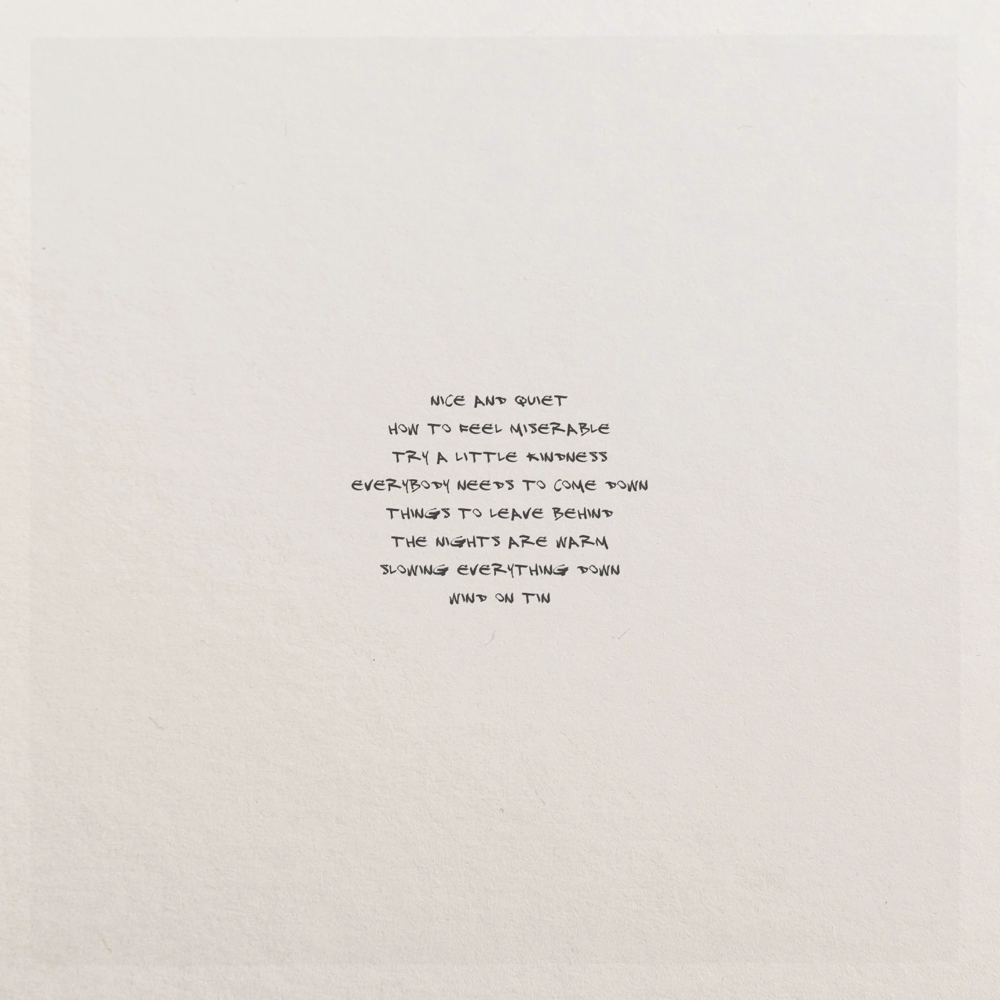

Still is based on acoustic sound sources, but is nevertheless clearly shaped by electronic influences. Loops and drones alternate improvisational and compositional elements. Synthesizers are used only selectively for their distinctive analog tone. Acoustic material is largely left unprocessed, and normally barely audible performance noises (such as picking noise) are brought to the foreground.
The release is magnificent! Well done, the vibe, chords, sounds, overal master quality. Ambient Zone
It just might be one of my favorite ambient releases so far this year. Low Light Mixes
Wonderful composition. Wow. M-a-s-h, Hej There Records